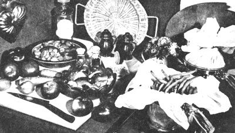

Recently I met Ann Sperling, a delightful and dedicated woman who has made a life's work of helping others stay healthy, and who now distributes a unique vegetable cooking parchment called Vita-Wrap. I can tell you from firsthand experience that this parchment not only keeps those valuable vitamins and minerals in your fresh vegetables from escaping into the water in which they're cooked, but it actually locks in a great deal of extra flavor and texture that usually gets poured down the drain.
I was first introduced to Ann's vegetable parchment by two friends as we sat in a deli one afternoon talking over the relative merits of mild dills and pickled tomatoes. One of my friends mentioned that she had recently made some applesauce by using a sample of vegetable parchment that Ann had given her. Naturally I was skeptical because-the way she talked about making the sauce-it sounded like she had cooked the apples right in a sheet of paper. How preposterous! Surprise! My friend assured me that was exactly what she had done and gave me a few sheets of the parchment of my own to try.
I accepted the challenge. After all, if I-the world's most average kitchen captain-could make fresh vegetables tastier with this new parchment, then I certainly wanted to know about it. The instructions were simple: wet a sheet of the paper, wrap my vegetables or fruit in it, tie off the top, and put the whole package in boiling water. From that point I was on my own.
When I went home to prepare dinner that night I ran two pots of boiling water and wet a piece of parchment (it comes in twenty-four-inch-square sheets) to make it pliable. Then I put a cup of fresh shelled peas in the center of the sheet with a pad of fresh butter, tied the ends up into a pouch, and dropped the package into one of the pots of boiling water. For the sake of comparison I poured the same amount of fresh peas directly into the other pot of bubbling water with a pad of b utter ... and then waited for both pans to finish cooking. The results were surprisingly clear-cut.
The peas cooked in the vegetable parchment had a definitely deeper green color and a fuller richer texture. None of the water had come through the material, so the peas had cooked only in their natural juices. By comparison, the other batch cooked directly in boiling water-had a smoother, almost ball-bearing texture and blander taste (presumably because of the liquid they had soaked up by direct osmosis). An interesting sidelight was that none of the butter seeped through or even stained the parchment, which I later learned was grease resistant. The pot in which the Vita-Wrap had been used needed no scrubbing or cleaning of any kind.
Since that first experiment I've discovered that all vegetables (carrots, beans, cauliflower, and even small potatoes) have a better taste and cook more rapidly when prepared in parchment.
I've been using Ann's vegetable parchment cooking wrap ever since (it's reusable and does not retain the odor or taste of food prepared in it ... just hang a sheet out to dry after each use), and recommend it to all my friends. My thanks to Ann for making my fresh vegetables even more enjoyable!
MOTHER'S NOTE: Although Chet didn't mention it in his article, anyone Interested in trying Ann Sperling's cooking parchment can order a package of three 24" X 24" sheets for $1.98 plus 40c postage and handling from Vita-Wrap, 1995 N.E. 147th Lane, North Miami, Florida 33181.
|
|
 |
|